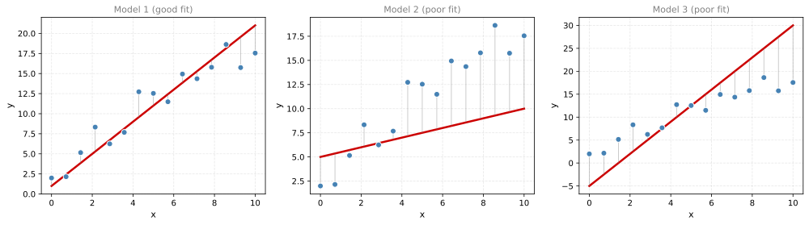
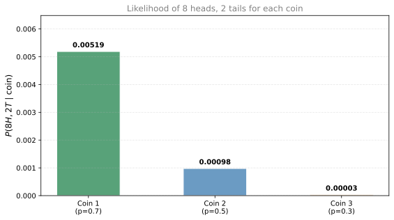
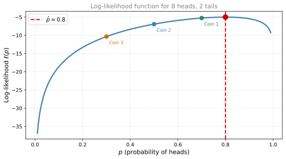
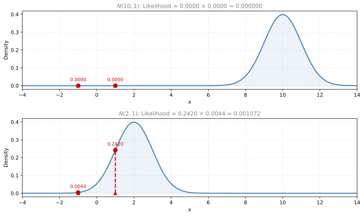
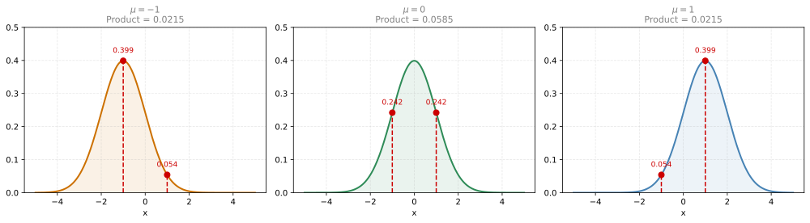
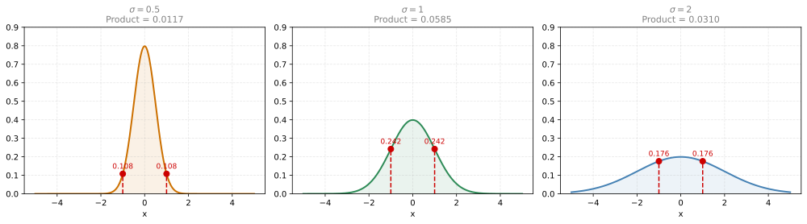

Point Estimation and Maximum Likelihood
statistics
In the previous lessons, you learned how to compute sample statistics (mean, proportion, variance) and how the Law of Large Numbers and Central Limit…
In the previous lessons, you learned how to compute sample statistics (mean, proportion, variance) and how the Law of Large Numbers and Central Limit Theorem guarantee that these estimates improve with more data. Now we move to a more general question: given some data, how do you estimate the parameters of the model that generated it?
This is the concept of estimation. It comes in different flavors, but we will start with point estimation and introduce the most common method: Maximum Likelihood Estimation (MLE). MLE is widely used in machine learning to train models.
Intuition: Popcorn on the Floor
Imagine you walk into a living room and see popcorn scattered on the floor next to the couch. Which event is most likely to have happened?
- People watching a movie
- People playing board games
- Somebody taking a nap
To answer this, you think about which scenario would produce popcorn with the highest probability:
- \(P(\text{popcorn} \mid \text{movies})\) = high (movies and popcorn go together)
- \(P(\text{popcorn} \mid \text{board games})\) = medium (possible but less common)
- \(P(\text{popcorn} \mid \text{nap})\) = low (napping does not produce popcorn)
You pick the scenario that made the evidence (popcorn) most likely. That scenario is movies. This reasoning is called maximum likelihood: you find the explanation that maximizes the probability of the observed evidence.
From Popcorn to Machine Learning
In machine learning, you have data and several possible models that could have generated it. You estimate:
- \(P(\text{data} \mid \text{Model 1})\)
- \(P(\text{data} \mid \text{Model 2})\)
- \(P(\text{data} \mid \text{Model 3})\)
Whichever model gives the data the highest probability is the one you pick. You are maximizing:
\[ \hat{\theta} = \arg\max_\theta \; P(\text{data} \mid \theta) \]
where \(\theta\) represents the model parameters.
Linear Regression Example
Imagine you have some data points and three possible lines (models). If you had a way to generate points based on a line (where points appear close to the line with some probability), then the line that gives your observed points the highest probability is the one MLE selects.
Model 1 has points clustered close to the line (high probability of the data under this model). Models 2 and 3 have large gaps between the points and the line (low probability). MLE picks Model 1.
What Comes Next
In the following sections, we will formalize MLE with concrete examples:
- MLE for a Bernoulli distribution (estimating the probability of heads from coin flip data)
- MLE for a Gaussian distribution (estimating mean and variance from data)
- MLE for linear regression (finding the best-fit line)
- Regularization (preventing overfitting)
- Bayesian estimation (MAP) (incorporating prior beliefs)
MLE: Bernoulli Example
Suppose you toss a coin 10 times and get 8 heads and 2 tails. You have three possible coins:
| Coin | \(P(\text{heads})\) |
|---|---|
| Coin 1 | 0.7 |
| Coin 2 | 0.5 |
| Coin 3 | 0.3 |
Which coin most likely produced 8 heads and 2 tails?
Comparing the Three Coins
The probability that each coin generates exactly 8 heads and 2 tails:
- Coin 1: \(0.7^8 \times 0.3^2 = 0.0051\)
- Coin 2: \(0.5^{10} = 0.0010\)
- Coin 3: \(0.3^8 \times 0.7^2 = 0.00003\)

Coin 1 has the highest likelihood, so if we had to pick one of these three, we would choose Coin 1.
Finding the Optimal \(p\)
But can we do better? What if we are not restricted to just these three coins? Let us find the value of \(p\) that maximizes the probability of seeing 8 heads and 2 tails.
The likelihood as a function of \(p\) is:
\[ L(p) = p^8 \cdot (1 - p)^2 \]
This is hard to maximize directly (products of small numbers). A standard trick is to take the logarithm, which turns products into sums. You saw this exact technique in the calculus section on log loss, where the logarithm converted a product of probabilities into a sum that is much easier to differentiate:
\[ \ell(p) = \log L(p) = 8\log(p) + 2\log(1 - p) \]
This is called the log-likelihood. Maximizing \(\ell(p)\) is equivalent to maximizing \(L(p)\) because the logarithm is a strictly increasing function.

Taking the Derivative
To find the maximum, take the derivative and set it to zero:
\[ \frac{d\ell}{dp} = \frac{8}{p} - \frac{2}{1 - p} = 0 \]
The \(\frac{8}{p}\) comes from differentiating \(8\log(p)\). The \(-\frac{2}{1-p}\) comes from the chain rule on \(2\log(1-p)\).
Solving:
\[ \frac{8}{p} = \frac{2}{1-p} \quad \Rightarrow \quad 8(1-p) = 2p \quad \Rightarrow \quad 8 - 8p = 2p \quad \Rightarrow \quad p = \frac{8}{10} = 0.8 \]
So the MLE estimate is \(\hat{p} = 0.8\). The best possible coin has a probability of heads equal to 80%. This makes intuitive sense: 8 out of 10 flips were heads.
General Case
For \(n\) coin flips with \(k\) heads, each flip is a Bernoulli variable with parameter \(p\):
\[ X_i \overset{i.i.d.}{\sim} \text{Bernoulli}(p) \]
The likelihood is:
\[ L(p) = \underbrace{p^{x_1}(1-p)^{1-x_1}}_{i=1} \cdot \underbrace{p^{x_2}(1-p)^{1-x_2}}_{i=2} \cdots \underbrace{p^{x_n}(1-p)^{1-x_n}}_{i=n} = \prod_{i=1}^{n} p^{x_i}(1-p)^{1-x_i} = p^k(1-p)^{n-k} \]
The log-likelihood is:
\[ \ell(p) = k\log(p) + (n-k)\log(1-p) \]
Taking the derivative and setting it to zero:
\[ \frac{d\ell}{dp} = \frac{k}{p} - \frac{n-k}{1-p} = 0 \]
Solving gives:
\[ \hat{p} = \frac{k}{n} \]
The MLE estimate for the probability of heads is simply the fraction of heads observed. This is the sample mean of the Bernoulli observations.
Review Questions
4. You flip a coin 20 times and get 15 heads. What is the MLE estimate for \(p\)?
TipAnswer
\(\hat{p} = \frac{k}{n} = \frac{15}{20} = 0.75\). The MLE estimate is the proportion of heads observed.
5. Why do we maximize the log-likelihood instead of the likelihood itself?
TipAnswer
Because the likelihood is a product of many small numbers, which is computationally difficult and numerically unstable. Taking the logarithm converts products into sums, making the function easier to differentiate and maximize. Since the logarithm is strictly increasing, the value of \(p\) that maximizes \(\log L(p)\) also maximizes \(L(p)\).
6. Why does the MLE result \(\hat{p} = k/n\) make intuitive sense?
TipAnswer
If you observed \(k\) heads out of \(n\) flips, the most natural estimate for the probability of heads is the observed proportion \(k/n\). MLE formalizes this intuition: the parameter value that makes the observed data most probable is exactly the observed frequency.
MLE: Gaussian Example
Now let us apply the same idea to a continuous distribution. Suppose you observe two data points: \(x_1 = 1\) and \(x_2 = -1\). These were sampled from some normal distribution. Which normal distribution most likely generated them?
Comparing Two Candidate Distributions
Consider two candidate normal distributions that may have generated the data:
- \(N(\mu = 10,\; \sigma = 1)\): mean 10, standard deviation 1
- \(N(\mu = 2,\; \sigma = 1)\): mean 2, standard deviation 1

The heights of the curve at the data points are the likelihoods. The bottom curve (\(N(2, 1)\)) produces both points with higher likelihood, so it wins.
Estimating the Mean
Now consider three Gaussians, all with \(\sigma = 1\) but different means: \(\mu = -1\), \(\mu = 0\), \(\mu = 1\).

The likelihoods at each data point are shown as red dashed lines. We multiply them (since the observations are independent):
- \(\mu = -1\): \(0.399 \times 0.054 = 0.022\)
- \(\mu = 0\): \(0.242 \times 0.242 = 0.059\) ← highest
- \(\mu = 1\): \(0.054 \times 0.399 = 0.022\)
The Gaussian with \(\mu = 0\) wins. Notice that \(\mu = 0\) is exactly the sample mean of the data: \(\bar{x} = \frac{1 + (-1)}{2} = 0\).
This is the key result: the MLE estimate for the mean of a Gaussian is the sample mean.
Estimating the Variance
Now that we know the best mean is \(\mu = 0\), which standard deviation fits best? Consider three Gaussians with \(\mu = 0\) and \(\sigma = 0.5\), \(\sigma = 1\), \(\sigma = 2\):

- \(\sigma = 0.5\): likelihoods are very low (points are far from the center relative to the narrow spread)
- \(\sigma = 1\): highest product (the spread matches the data)
- \(\sigma = 2\): lower (the curve is too wide, so each point has low density)
The winner is \(\sigma = 1\). Now notice: the variance of the observations is \(\frac{(1-0)^2 + (-1-0)^2}{2} = 1\), which equals \(\sigma^2 = 1\). The MLE estimate for the variance is the sample variance (dividing by \(n\), the biased version).
MLE Results for Gaussian
For data \(x_1, x_2, \ldots, x_n\) sampled from \(N(\mu, \sigma^2)\):
\[ \hat{\mu}_{MLE} = \frac{1}{n}\sum_{i=1}^n x_i = \bar{x} \]
\[ \hat{\sigma}^2_{MLE} = \frac{1}{n}\sum_{i=1}^n (x_i - \bar{x})^2 \]
The MLE for the mean is the sample mean. The MLE for the variance is the sample variance dividing by \(n\) (not \(n-1\)). This is the biased estimator \(\widehat{\text{Var}}(X)\) we saw in the sample variance section. MLE naturally produces the biased estimate.
NoteFull Derivation (Calculus)
Given \(n\) samples \(X_i \overset{i.i.d.}{\sim} N(\mu, \sigma^2)\), the likelihood is:
\[ L(\mu, \sigma; \mathbf{x}) = \prod_{i=1}^n \frac{1}{\sqrt{2\pi}\,\sigma} e^{-\frac{1}{2}\frac{(x_i - \mu)^2}{\sigma^2}} = \frac{1}{(\sqrt{2\pi})^n \sigma^n} e^{-\frac{1}{2\sigma^2}\sum_{i=1}^n(x_i - \mu)^2} \]
The log-likelihood is:
\[ \ell(\mu, \sigma) = -\frac{n}{2}\log(2\pi) - n\log(\sigma) - \frac{1}{2\sigma^2}\sum_{i=1}^n(x_i - \mu)^2 \]
Partial derivative w.r.t. \(\mu\):
\[ \frac{\partial \ell}{\partial \mu} = \frac{1}{\sigma^2}\left(\sum_{i=1}^n x_i - n\mu\right) = 0 \]
Since \(\sigma > 0\), this gives \(\sum x_i - n\mu = 0\), so:
\[ \hat{\mu} = \frac{\sum_{i=1}^n x_i}{n} = \bar{x} \]
Partial derivative w.r.t. \(\sigma\):
\[ \frac{\partial \ell}{\partial \sigma} = -\frac{n}{\sigma} + \frac{1}{\sigma^3}\sum_{i=1}^n(x_i - \mu)^2 = 0 \]
Multiplying by \(\sigma\) and substituting \(\hat{\mu} = \bar{x}\):
\[ -n + \frac{1}{\sigma^2}\sum_{i=1}^n(x_i - \bar{x})^2 = 0 \]
Solving:
\[ \hat{\sigma}^2 = \frac{\sum_{i=1}^n (x_i - \bar{x})^2}{n} \]
Note: this divides by \(n\) (not \(n-1\)), confirming that MLE gives the biased variance estimator.
Worked Example: Heights of 18-Year-Olds
Suppose you measure the heights (in inches) of 10 people:
\[ 66.75, \; 70.24, \; 67.19, \; 67.09, \; 63.65, \; 64.64, \; 69.81, \; 69.79, \; 73.52, \; 71.74 \]
import numpy as np
heights = np.array([66.75, 70.24, 67.19, 67.09, 63.65, 64.64, 69.81, 69.79, 73.52, 71.74])
mu_hat = heights.mean()
sigma_hat = np.sqrt(np.sum((heights - mu_hat)**2) / len(heights))
print(f"MLE for mu: {mu_hat:.3f}")
print(f"MLE for sigma: {sigma_hat:.3f}")MLE for mu: 68.442
MLE for sigma: 2.954So the MLE estimates are \(\hat{\mu} = 68.442\) and \(\hat{\sigma} = 2.954\). The best-fit Gaussian for this data is \(N(68.442, \; 2.954^2)\).
Review Questions
7. You observe data points \(\{3, 5, 7\}\). What is the MLE estimate for the mean of a Gaussian that generated them?
TipAnswer
\(\hat{\mu} = \bar{x} = \frac{3 + 5 + 7}{3} = 5\). The MLE estimate for the Gaussian mean is always the sample mean.
8. Why does MLE for a Gaussian variance give the biased estimate (dividing by \(n\)) rather than the unbiased estimate (dividing by \(n-1\))?
TipAnswer
MLE maximizes the likelihood of the data given the parameters. The value of \(\sigma^2\) that maximizes the likelihood happens to be \(\frac{1}{n}\sum(x_i - \bar{x})^2\). This is a property of the method itself. MLE does not account for the bias introduced by estimating \(\mu\) from the same data. The unbiased correction (\(n-1\)) comes from a different consideration (Bessel’s correction).
9. In the three-Gaussian comparison for estimating the mean, why did \(\mu = 0\) win over \(\mu = -1\) and \(\mu = 1\)?
TipAnswer
With data points at \(1\) and \(-1\), the Gaussian centered at \(\mu = 0\) gives both points equal and relatively high likelihood (both are 1 unit from the center). The other Gaussians are closer to one point but far from the other, making one likelihood high but the other very low. Since we multiply likelihoods, having one very low value drags the product down. The balanced center (\(\mu = 0 = \bar{x}\)) gives the best overall product.
10. Consider the sample \(S = \{-1, 0, 1, 2\}\) drawn from a Normal Distribution with unknown mean and variance. Select the Normal Distribution most likely to have generated this sample (use population variance).
- \(N(1, 0) = N(1, 0^2)\)
- \(N(1.25, 0.5) = N(1.12, 0.71^2)\)
- \(N(0, 1) = N(0, 1^2)\)
- \(N(0.5, 1.25) = N(0.5, 1.12^2)\)
TipAnswer
d. MLE for the mean is the sample mean: \(\hat{\mu} = \frac{-1+0+1+2}{4} = 0.5\). MLE for the variance (population variance, dividing by \(n\)): \(\hat{\sigma}^2 = \frac{(-1.5)^2 + (-0.5)^2 + (0.5)^2 + (1.5)^2}{4} = \frac{5}{4} = 1.25\). So \(N(0.5, 1.25)\).
11. Which of the following methods can be used to estimate a population’s variance, mean, and proportion?
- Sample mean
- Sample variance
- Point estimation
- Regression analysis
TipAnswer
c. Point estimation is the general framework for estimating population parameters (mean, variance, proportion) from sample data. Sample mean and sample variance are specific point estimators for individual parameters, but point estimation as a method encompasses all of them.
12. You have observations \(\{-1, 2\}\) and two candidate distributions: \(N(0, 2^2)\) and \(N(1, 1^2)\). Which is more likely to have generated the sample?
- \(N(0, 2^2)\)
- \(N(1, 1^2)\)
- Cannot be determined.
TipAnswer
a. For \(N(0, 4)\): \(L = f(-1) \times f(2) = 0.176 \times 0.121 = 0.0213\). For \(N(1, 1)\): \(L = f(-1) \times f(2) = 0.054 \times 0.242 = 0.013\). The product is higher for \(N(0, 2^2)\), so it is more likely to have generated the data.
Review Questions
1. What is the core idea behind Maximum Likelihood Estimation?
TipAnswer
Given observed data, find the model parameters that make the observed data most probable. You maximize \(P(\text{data} \mid \theta)\) over all possible values of \(\theta\).
2. In the popcorn example, why do we pick “movies” as the explanation?
TipAnswer
Because among the three scenarios (movies, board games, nap), watching movies has the highest conditional probability of producing popcorn on the floor. We are selecting the scenario that maximizes the likelihood of the observed evidence.
3. How does MLE apply to choosing between different regression lines?
TipAnswer
Each line (model) implies a probability for the observed data points (the closer the points are to the line, the higher the probability). MLE picks the line that assigns the highest overall probability to the observed data.
Interactive Tool: Likelihood Functions
Use this tool to visualize likelihood functions. Choose a distribution, adjust the true population parameter, pick a sample size, and see how the MLE estimate compares to the true parameter.